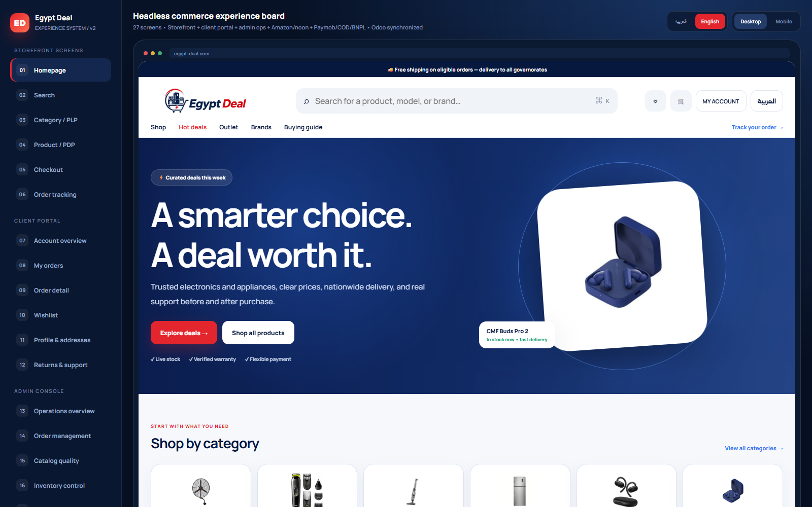
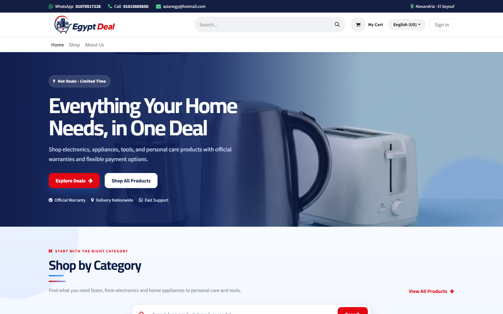
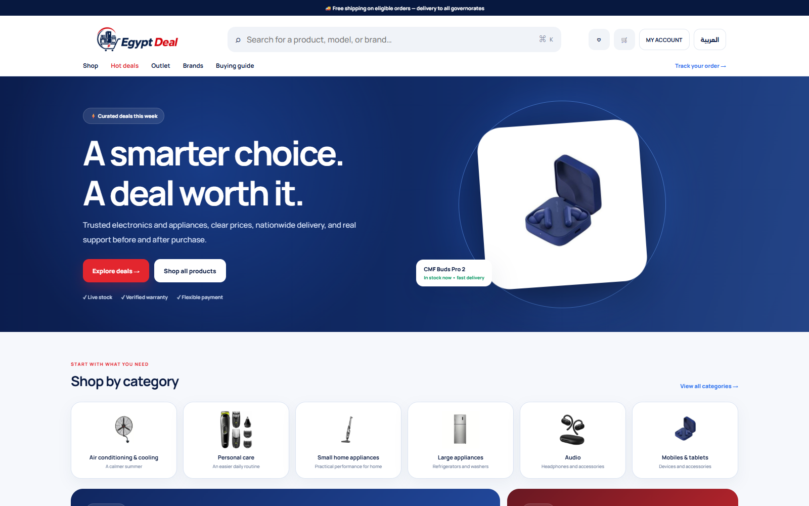
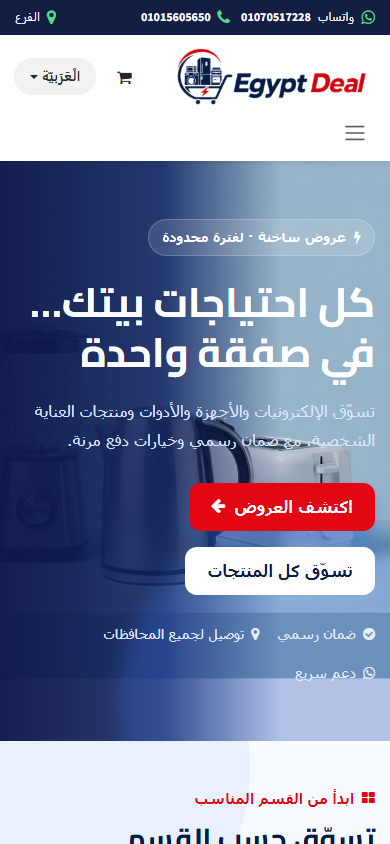
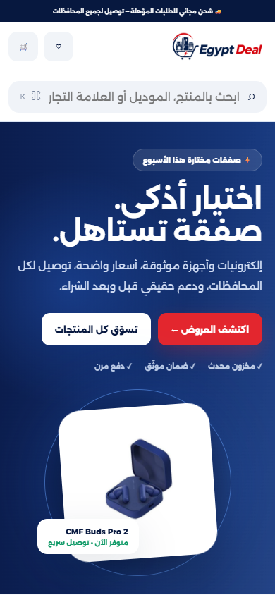

مقترح استراتيجي • جاهز للعرض على العميل
من موقع داخل أودو إلى منظومة تجارة تملكها إيجيبت ديل.
واجهة عربية وإنجليزية مستقلة، مرتبطة بالمخزون والطلبات والفواتير في أودو، ومصممة من البداية للمدفوعات المحلية وأمازون ونون وخدمة العميل والتشغيل اليومي.
القرار التجاري
نفصل تجربة البيع عن نظام الأعمال، من غير ما نصنع مصدر بيانات جديد.
المشكلة ليست شكل الموقع فقط. المطلوب هو سرعة في البيع، دقة في المخزون، وضوح في الدفع، وخدمة ذاتية للعميل، مع تشغيل موثوق عبر أكثر من قناة.
تجربة مقيدة
أي تغيير كبير في الواجهة يظل مرتبطًا بقوالب وتحديثات وتشغيل نظام الـERP.
خطر ازدواج البيانات
إضافة منصة تجارة ثانية قد تنشئ تعارضًا في السعر والمخزون والطلب ما لم يُحسم مصدر الحقيقة.
تشغيل محلي حقيقي
المدفوعات والتقسيط والدفع عند الاستلام والمحافظات ليست مجرد أزرار؛ هي دورة تشغيل ومطابقة مالية.
قنوات منفصلة
المتجر وAmazon وNoon يحتاجون مخزونًا مشتركًا وطلبات غير مكررة ومرتجعات وتسويات قابلة للمراجعة.
الحل: واجهة مستقلة + طبقة تحكم + Odoo كنظام حقيقة.
نغير ما يراه العميل ويستخدمه الفريق، لكننا لا نعيد اختراع المنتج والسعر والمخزون والفاتورة الموجودة بالفعل في النظام.
1×
معمارية الحل
طبقات واضحة تمنع الفوضى وتحافظ على سرعة التطوير.
كل طبقة لها مسؤولية محددة: Odoo يدير الحقيقة التجارية، طبقة التحكم تدير التزامن والقواعد، والواجهات تقدم التجربة المناسبة لكل مستخدم.
مصدر الحقيقة
Odoo ERP
المنتجات، قوائم الأسعار، المخزون القابل للبيع، أوامر البيع، التجهيز، الفواتير، والعملاء.
→
طبقة التجارة والتحكم
مزامنة وعزل الأعطال
استيراد كامل وتغييرات فورية وقوائم إعادة المحاولة وعزل البيانات غير الصالحة.
تسعير ومخزون وطلبات آمنة
إعادة تحقق قبل الدفع، حجوزات مركزية، مفاتيح منع التكرار، ومطابقة دورية.
بحث ومحتوى وتحليلات
فهرس ثنائي اللغة، إدارة محتوى، سلوك المستخدم، ومؤشرات تشغيل موحدة.
→
الواجهات والقنوات
المتجر وبوابة العميل
اكتشاف وشراء وتتبع وفواتير وعناوين ومرتجعات ودعم.
لوحة التشغيل
طلبات وكتالوج ومخزون وتكاملات ومدفوعات وعملاء وتحليلات.
Paymob • Amazon • noon • Carriers
موصلات مستقلة بعقود موحدة، مفاتيح تكرار، وتتبّع وتسوية.
السعرOdoo pricelist
المخزونOdoo + reservation ledger
الدفعVerified provider callback
التنفيذOdoo picking + carrier
التسويةProvider + bank/carrier + Odoo
النطاق الكامل
منتج تجارة متكامل، وليس مجرد صفحة رئيسية جديدة.
النطاق يغطي دورة العميل ودورة الموظف ودورة البيانات ودورة المال. كل ميزة مرتبطة بنتيجة تشغيل أو بيع قابلة للقياس.
المتجر والاكتشاف والتحويل
واجهة سريعة للموبايل تجعل الوصول للمنتج الصحيح والثقة في السعر والتوفر واتخاذ قرار الشراء أسهل.
- رئيسية مرنة وإدارة أقسام
- بحث عربي وإنجليزي مع مرادفات
- أقسام وفلاتر وترتيب
- صفحة منتج غنية بالمواصفات
- عروض ساخنة وأوتلت
- سلة ودفع مرنان
- SEO وروابط قديمة محولة
- تجربة كاملة للموبايل
النتيجة: اكتشاف أسرع وثقة أعلى وتسرب أقل قبل الدفع.
بوابة العميل والخدمة الذاتية
العميل يرى الحقيقة التي يحتاجها من غير مكالمات طويلة أو حالات تقنية غير مفهومة من النظام الخلفي.
- تسجيل آمن أو رابط سحري
- كل الطلبات وحالاتها
- تتبع الضيف برقم الطلب
- فواتير وتنزيلات
- عناوين وتفضيلات الإشعارات
- قائمة أمنيات وتغير سعر
- مرتجعات وضمان
- دعم مرتبط بالطلب
النتيجة: ضغط أقل على خدمة العملاء وشفافية أعلى بعد الشراء.
الكتالوج والمحتوى ثنائي اللغة
لا يصل أي منتج للمتجر قبل التأكد من السعر والصورة والقسم والعلامة والنسختين العربية والإنجليزية.
- استيراد كامل وتغييرات فورية
- عزل المنتج غير الصالح
- تقييم اكتمال المحتوى
- خط صور وتحسين تلقائي
- إدارة الصفحة والحملات
- مراجعة عربية وإنجليزية
- بيانات SEO منظمة
- سجل نشر وتدقيق
النتيجة: لا سعر صفري ولا منتج ناقص ولا تجربة مختلطة اللغة.
المخزون والطلب والتنفيذ
المخزون المعروض والطلب المنشأ يمران بقواعد تمنع البيع الزائد والتكرار حتى عند تعطل شبكة أو خدمة.
- مخزون متعدد المواقع
- حجوزات ومخزون أمان
- إعادة تحقق قبل الطلب
- منع تكرار الطلب
- قوائم إعادة المحاولة
- مطابقة دورية مع Odoo
- تتبع التجهيز والشحن
- تنبيهات اختلاف المخزون
النتيجة: مخزون أكثر صدقًا وطلبات مرة واحدة ومسار تنفيذ قابل للتعافي.
المدفوعات والاسترداد والمصالحة
نجاح الدفع لا يأتي من رجوع المتصفح؛ يأتي من إشعار مزود موثق ثم يطابق مع الطلب والفاتورة والتسوية.
- Paymob Intention API
- دفع مستضاف وتحقق ثلاثي
- محافظ حسب قدرة التاجر
- تقسيط حسب أهلية المزود
- تحقق ومخاطر للدفع عند الاستلام
- استرداد كلي وجزئي
- موافقتان للمبالغ الحساسة
- مطابقة رباعية يومية
النتيجة: دفع موثوق، استرداد متتبع، ونقد لا يُعتبر محصلًا قبل المطابقة.
Amazon وNoon وتوحيد القنوات
كل قناة تحتفظ بمرجعها وقواعدها، لكن الحجز والمخزون والطلب والمرتجع والتسوية ترجع إلى نموذج موحد.
- Amazon SP-API
- Noon Partner API
- ربط SKU وASIN ورمز الشريك
- توزيع كمية قابلة للبيع
- ضوابط سعر وهامش
- استيراد طلب دون تكرار
- تحديث شحن ومرتجع
- تسويات ورسوم مستقلة
النتيجة: توسع القنوات من غير بيع زائد أو طلبات ضائعة أو تسويات غامضة.
لوحة إدارة مبنية للعمل الحقيقي
كل مشكلة لها مالك وحالة ومسار استرداد آمن بدل البحث في قواعد البيانات أو تكرار العمليات يدويًا.
- لوحة عمليات وتنبيهات
- إدارة الطلبات والتنفيذ
- جودة الكتالوج
- مطابقة المخزون
- صحة التكاملات والقوائم
- إدارة المحتوى والعملاء
- مدفوعات وقنوات منفصلة
- صلاحيات وسجل تدقيق
النتيجة: فريق أسرع، أخطاء أقل، وتحكم لا يعتمد على فرد واحد.
الأمان والأداء والقياس
الجودة ليست مرحلة أخيرة؛ تدخل في التصميم والاختبارات والنشر والمراقبة من أول يوم.
- صلاحيات أقل ما يمكن
- لا تخزين لبيانات البطاقة
- حماية وجدار تطبيق
- تتبّع ومؤشرات وتنبيهات
- اختبارات عربية وإنجليزية
- اختبارات أداء وفوضى
- نشر تدريجي ورجوع آمن
- تحليلات تجارية موحدة
النتيجة: منصة قابلة للثقة في أيام الضغط، وليس فقط في العرض.
دليل مرئي
سبع وعشرون شاشة توضح ما سيشتريه العميل وما سيديره الفريق.
النموذج ليس تصميم واجهة فقط. هو خريطة منتج تشمل الحالات والسلطات والتنبيهات ومسارات التعافي.

6شاشات المتجر
6شاشات بوابة العميل
8شاشات الإدارة الأساسية
3شاشات الأسواق
4شاشات المدفوعات
كيف يعمل الطلب
كل خطوة لها حقيقة معتمدة، وليس مجرد حالة على الشاشة.
المسار مصمم بحيث يتحمل تكرار الضغط، انقطاع الشبكة، تأخر Odoo، وتأخر إشعار الدفع من غير إنشاء طلب أو تحصيل مرتين.
اكتشاف
بحث وفلاتر وتوفر من الفهرس
تسعير
إعادة حساب على الخادم
حجز
حجز مركزي بمدة صلاحية
دفع
إشعار مزود موثق
تصدير
طلب واحد فقط إلى Odoo
تنفيذ ومطابقة
شحن وفاتورة وتسوية
المقارنة التنافسية
لا توجد منصة أفضل في كل شيء. توجد منصة أنسب لقرار معين.
نقارن حسب واقع Egypt Deal: الحفاظ على Odoo، المدفوعات المصرية، اللغة العربية، Amazon وNoon، وإدارة الاستثناءات والتسويات.
الموقع الحالي × التصور المقترح
من المتجر الحالي إلى تجربة Headless المقترحة
مقارنة مرئية متكافئة لنقطة الدخول نفسها على سطح المكتب والموبايل. الشاشات المقترحة تصورٌ للاتجاه المستهدف وليست نتيجة إنتاج منشورة.
الحالي
المتجر الحالي — سطح المكتب

تصور مقترح
التجربة المقترحة — سطح المكتب

الحالي
المتجر الحالي — الموبايل

تصور مقترح
التجربة المقترحة — الموبايل

تم التقاط الشاشات الحالية من egypt-deal.com في 16 أغسطس 2026. الشاشات المقترحة توضيحية.
هذه مصفوفة ملاءمة للمشروع وليست ترتيبًا عامًا. كلمة مخصص تعني أن الميزة تحتاج تكاملًا أو إضافة أو تصميم تشغيل إضافيًا.
| المعيار | الحل المقترح | Odoo Website | Shopify | WooCommerce | BigCommerce | Adobe Commerce |
|---|---|---|---|---|---|---|
| الحفاظ على حقيقة Odoo | مصمم لهذاOdoo يظل المصدر | أصليأقرب مسار للنظام | تكامل مخصصيجب حسم سلطة كل نظام | تكامل مخصصقاعدة تجارة ثانية | تكامل مخصصخلفية SaaS إضافية | برنامج مؤسسيتكامل واسع |
| حرية تجربة العميل | كاملةمبنية للعلامة | جيدةداخل نموذج القوالب والمحرر | قويةHydrogen / Storefront API | قويةقوالب أو Headless | قويةAPI ومكونات جاهزة | مؤسسيةخبرة واسعة وتكلفة أعلى |
| العربية في المتجر والتشغيل | شرط قبولRTL + LTR | متاحةترجمة المنتجات والصفحات | متاحةالتشغيل المصري مخصص | عبر المنظومةإضافات وتنفيذ | دوليالتشغيل المحلي مخصص | قويةموجهة للمؤسسات |
| Paymob والتقسيط والدفع عند الاستلام | تشغيل كاملمن النية حتى التسوية | قابل للتوسعةالدورة المستهدفة مخصصة | مزود خارجيمصر غير مدرجة في Shopify Payments وقت البحث | خيارات كثيرةالتوحيد والمطابقة حسب التنفيذ | تكامل بوابةالدورة المصرية مخصصة | تكامل مؤسسيقوي لكن أثقل |
| مخزون وطلب موحدان | سجل مركزيحجز ومنع تكرار | أصليفي مسار Odoo | قرار معماريOdoo أم Shopify | قرار معماريOdoo أم Woo | قرار معماريخلفيتان تجاريتان | قرار مؤسسيتوحيد واسع |
| Amazon وNoon | موصلات مخصصةقوائم، مخزون، طلب، مرتجع، تسوية | Amazon متاحNoon والضوابط المتقدمة مخصصة | منظومة تطبيقاتNoon والتسوية حسب التنفيذ | إضافاتالجودة والتوحيد متغيران | قنوات قويةNoon المحلي يظل مخصصًا | برنامج قنواتملحقات وتكامل مؤسسي |
| لوحة تشغيل ومصالحة | ضمن النطاقإدارة واسترداد وتدقيق | ERP قويتحكم Headless والقنوات مخصص | إدارة تجارة قويةمطابقة Odoo محلية مخصصة | مزيج إضافاتلوحة موحدة تحتاج بناء | لوحة SaaS قويةضوابط Odoo ومصر مخصصة | مؤسسيةتحكم وتحليلات واسعة |
| إطلاق متجر بسيط | متوسطبعد إثبات التكامل | الأسرعإذا كانت التجربة الأصلية كافية | سريعللتجارة القياسية | سريع إلى متوسطحسب الاستضافة والإضافات | سريعمسار SaaS | برنامج أطولمؤسسي |
| عبء التشغيل والملكية | مُدار مخصصفريق وانضباط مطلوبان | منخفضخصوصًا على Odoo Online | منخفض إلى متوسطالواجهة المستقلة لها ملكية | مرتفعاستضافة وأمان وإضافات | منخفض إلى متوسطخلفية SaaS | مرتفع جدًاتشغيل مؤسسي |
| ملاءمة Egypt Deal | الأعلىمصمم حول القيود الفعلية | قوي للبساطةأقل تميزًا في التجربة | قوي للتجارة العامةيضيف مصدر تجارة آخر | مرنعبء توحيد أكبر | قوي Headlessخلفية أخرى غير لازمة | أكبر من الاحتياجقوة مؤسسية بتكلفة وتعقيد |
أين يتفوق كل بديل بصدق؟
أقل تعقيد وأسرع بداية
الاختيار الأفضل عندما تكون تجربة Odoo القياسية وتكاملاته الحالية كافية.
منظومة تجارة مُدارة وناضجة
قوي في التطبيقات والشركاء والتجارة العالمية وله مسار Headless موثوق.
ملكية مفتوحة وقوة المحتوى
مناسب لفرق WordPress القادرة على إدارة الاستضافة والإضافات والجودة.
تجارة SaaS مرنة وHeadless
واجهة API قوية ومتاجر متعددة من لوحة واحدة مع خلفية تجارة جاهزة.
حجم وحوكمة مؤسسية
يتفوق عند ملايين المنتجات ومئات العلامات والأسواق ومتطلبات B2B وB2C المعقدة.
الأنسب لواقع المشروع
يحافظ على Odoo ويضيف تجربة مميزة وتشغيلًا مصريًا وقنوات وتسوية من غير حقيقة تجارية ثانية.
لماذا هذا هو الاختيار المقترح
عشر مزايا مرتبطة مباشرة بالبيع والتشغيل والملكية.
لا نعتمد على شعارات عامة مثل أكثر مرونة. كل ميزة هنا تحل مخاطرة أو فرصة واضحة في Egypt Deal.
01
نحافظ على استثمار Odoo
لا هجرة شاملة ولا إعادة إدخال للمنتجات والمخزون والفواتير.
02
حقيقة واحدة لكل القنوات
المتجر وAmazon وNoon يستخدمون تخصيص مخزون وهوية طلب واحدة.
03
العربية ليست ترجمة لاحقة
البحث والاتجاه والمحتوى والأخطاء والفواتير والإدارة كلها ثنائية اللغة.
04
دفع مصري مصمم كتشغيل
أهلية وتقسيط ودفع عند الاستلام واسترداد وتسوية بأدلة واضحة.
05
تحديث الواجهة دون لمس ERP
تجارب وحملات وتحسينات أداء تنشر باستقلال عن تحديثات Odoo.
06
منع التكرار والبيع الزائد
مفاتيح تكرار وحجز مركزي وإعادة تحقق ومطابقة تحت الأعطال.
07
ملكية استراتيجية أقل تقييدًا
الواجهة والبحث والدفع والقنوات خلف عقود يمكن استبدالها وتطويرها.
08
خدمة عميل ذاتية
تتبع وفواتير وعناوين ومرتجعات وضمان مرتبطة بنفس حقيقة الطلب.
09
تحويل أفضل بالجودة
سرعة واكتشاف وتوفر موثوق ومواصفات وسعر ودفع واضحون.
10
قياس موحد للقرار
نفس تعريف الإيراد والطلب والدفع والمخزون عبر التحليلات والتشغيل.
خطة التنفيذ
اثنا عشر أسبوعًا على مراحل، تبدأ بإثبات لا يمكن تجاوزه.
التقدير لفريق متعدد التخصصات. المدة التجارية النهائية تُثبت بعد فحص نسخة Odoo والصلاحيات والحقول الحقيقية وحسابات المزودين.
إثبات التكامل
قراءة منتج وسعر ومخزون وطلب وتجهيز، ثم إنشاء طلب مسودة آمن وتكراره دون نسخة ثانية.
الأساس
الكود والبيئات والنشر والمراقبة والتصميم واللغات والعقود وقاعدة البيانات.
الكتالوج والاكتشاف
المزامنة والجودة والصور والبحث والأقسام والرئيسية وSEO.
المنتج والسلة
مواصفات وتوفر ومقارنة وسياسات وتقسيط وسلة محفوظة وإعادة تحقق.
الدفع والمدفوعات
العناوين والتوصيل وPaymob والتقسيط والدفع عند الاستلام والاسترداد والتسوية.
الحساب والتتبع
تسجيل العميل والطلبات والفواتير والتتبع والإشعارات والدعم.
التقوية والهجرة
المحتوى والروابط واختبارات الأمان والأداء والوصول والتدريب وتجربة الإطلاق.
Amazon وNoon
الحسابات والقوائم والمخزون والطلبات والشحن والمرتجعات والتسويات بإطلاق تدريجي.
الفريق المقترح
قيادة منتج/معمارية، مطورا Backend، مطور Frontend، تصميم/محتوى، جودة وأتمتة، DevOps بدوام جزئي، ومالك عمليات من العميل.
قاعدة الالتزام
لا يبدأ بناء الدفع قبل نجاح إثبات Odoo، ولا تنطلق الأسواق قبل استقرار مسار الطلب والمدفوعات في المتجر.
| التكلفة أو المخاطرة | كيف نعالجها |
|---|---|
| استثمار أولي أكبر من قالب جاهز | إثبات مبكر، نطاق مرحلي، واختبارات قبول واضحة قبل كل توسع. |
| ملكية طبقة تكامل مخصصة | عقود مكتوبة ومراقبة وقوائم أخطاء ومطابقة ودليل تشغيل واتفاق دعم. |
| اعتماد على صلاحيات وحسابات خارجية | قائمة متطلبات بشرية، بيئات اختبار، واكتشاف قدرة قبل أي وعد إطلاق. |
| تعقيد Headless إذا أُفرط في الخدمات | أقل عدد ممكن من الخدمات، مستودع موحد، ومصدر حقيقة واحد. |
الخطوة التالية
اعتماد مرحلة إثبات التكامل، ثم تثبيت العرض التجاري وخطة النشر.
هذه المرحلة القصيرة تحوّل أهم افتراض في المشروع إلى دليل: هل يمكن قراءة الحقيقة من Odoo وكتابة طلب آمن بالصلاحيات المتاحة؟ بعدها يصبح الجدول والتكلفة والإطلاق قرارات مبنية على واقع.